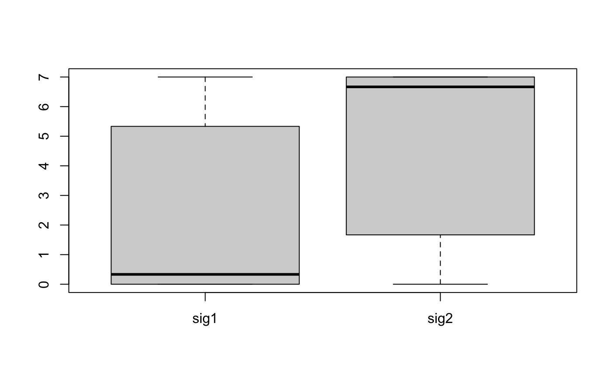

R/sig_fit_bootstrap.R
sig_fit_bootstrap.RdThis can be used to obtain the confidence of signature exposures or search the suboptimal decomposition solution.
sig_fit_bootstrap( catalog, sig, n = 100L, sig_index = NULL, sig_db = "legacy", db_type = c("", "human-exome", "human-genome"), show_index = TRUE, method = c("QP", "NNLS", "SA"), SA_not_bootstrap = FALSE, type = c("absolute", "relative"), rel_threshold = 0, mode = c("SBS", "DBS", "ID", "copynumber"), find_suboptimal = FALSE, suboptimal_ref_error = NULL, suboptimal_factor = 1.05, ... )
| catalog | a named numeric vector or a numeric matrix with dimension Nx1. N is the number of component, 1 is the sample. |
|---|---|
| sig | a |
| n | the number of bootstrap replicates. |
| sig_index | a vector for signature index. "ALL" for all signatures. |
| sig_db | can be 'legacy' (for COSMIC v2 'SBS'), 'SBS', 'DBS', 'ID' and 'TSB' (for SBS transcriptional strand bias signatures). Default 'legacy'. |
| db_type | only used when |
| show_index | if |
| method | method to solve the minimazation problem. 'NNLS' for nonnegative least square; 'QP' for quadratic programming; 'SA' for simulated annealing. |
| SA_not_bootstrap | if |
| type | 'absolute' for signature exposure and 'relative' for signature relative exposure. |
| rel_threshold | numeric vector, a relative exposure lower than this value will be set to 0. Of note, this is a little different from the same parameter in get_sig_exposure. |
| mode | signature type for plotting, now supports 'copynumber', 'SBS', 'DBS' and 'ID'. |
| find_suboptimal | logical, if |
| suboptimal_ref_error | baseline error used for finding suboptimal solution.
if it is |
| suboptimal_factor | suboptimal factor to get suboptimal error, default is |
| ... | control parameters passing to argument |
a list
Huang X, Wojtowicz D, Przytycka TM. Detecting presence of mutational signatures in cancer with confidence. Bioinformatics. 2018;34(2):330–337. doi:10.1093/bioinformatics/btx604
W <- matrix(c(1, 2, 3, 4, 5, 6), ncol = 2) colnames(W) <- c("sig1", "sig2") W <- apply(W, 2, function(x) x / sum(x)) H <- matrix(c(2, 5, 3, 6, 1, 9, 1, 2), ncol = 4) colnames(H) <- paste0("samp", 1:4) V <- W %*% H V#> samp1 samp2 samp3 samp4 #> [1,] 1.666667 2.1 2.566667 0.7 #> [2,] 2.333333 3.0 3.333333 1.0 #> [3,] 3.000000 3.9 4.100000 1.3if (requireNamespace("quadprog", quietly = TRUE)) { H_bootstrap <- sig_fit_bootstrap(V[, 1], W, n = 10, type = "absolute") ## Typically, you have to run many times to get close to the answer boxplot(t(H_bootstrap$expo)) H[, 1] ## Return P values ## In practice, run times >= 100 ## is recommended report_bootstrap_p_value(H_bootstrap) ## For multiple samples ## Input a list report_bootstrap_p_value(list(samp1 = H_bootstrap, samp2 = H_bootstrap)) ## Find suboptimal decomposition H_suboptimal <- sig_fit_bootstrap(V[, 1], W, n = 10, type = "absolute", method = "SA", find_suboptimal = TRUE ) }#>#> ℹ [2020-06-23 15:11:47]: Checking catalog.#> ✓ [2020-06-23 15:11:47]: Done.#> ℹ [2020-06-23 15:11:47]: About to start bootstrap.#>#>#>#>#>#>#>#>#>#>#>#>#> ✓ [2020-06-23 15:11:48]: Bootstrap done.#> ✓ [2020-06-23 15:11:48]: Signature exposures collected.#> ✓ [2020-06-23 15:11:48]: Errors collected.#> ✓ [2020-06-23 15:11:48]: Done.#> ℹ [2020-06-23 15:11:48]: 0.51 secs elapsed.#> ℹ [2020-06-23 15:11:48]: Started.#> ✓ [2020-06-23 15:11:48]: Single sample mode enabled.#> ✓ [2020-06-23 15:11:48]: Done.#> ℹ [2020-06-23 15:11:48]: 0.006 secs elapsed.#> ℹ [2020-06-23 15:11:48]: Started.#> ✓ [2020-06-23 15:11:48]: Batch mode enabled.#> ✓ [2020-06-23 15:11:48]: Done.#> ℹ [2020-06-23 15:11:48]: 0.006 secs elapsed.#> ℹ [2020-06-23 15:11:48]: Started.#> ℹ [2020-06-23 15:11:48]: Suboptimal mode enabled.#> ℹ [2020-06-23 15:11:48]: Checking catalog.#> ✓ [2020-06-23 15:11:48]: Done.#> ℹ [2020-06-23 15:11:48]: Running 'SA' method to getting optimal error as baseline error.#> ℹ [2020-06-23 15:11:48]: Started.#> ✓ [2020-06-23 15:11:48]: Signature matrix detected.#> ✓ [2020-06-23 15:11:48]: Database and index checked.#> ✓ [2020-06-23 15:11:48]: Signature normalized.#> ℹ [2020-06-23 15:11:48]: Checking row number for catalog matrix and signature matrix.#> ✓ [2020-06-23 15:11:48]: Checked.#> ✓ [2020-06-23 15:11:48]: Method 'SA' detected.#> ✓ [2020-06-23 15:11:48]: Corresponding function generated.#> ℹ [2020-06-23 15:11:48]: Calling function.#> ✓ [2020-06-23 15:11:48]: Done.#> ℹ [2020-06-23 15:11:48]: Generating output signature exposures.#> ✓ [2020-06-23 15:11:48]: Done.#> ℹ [2020-06-23 15:11:48]: Calculating errors (Frobenius Norm).#> ✓ [2020-06-23 15:11:48]: Done.#> ℹ [2020-06-23 15:11:48]: 0.244 secs elapsed.#> ℹ [2020-06-23 15:11:48]: The optimal error is 0, resetting it to 1% of total exposure.#> ✓ [2020-06-23 15:11:48]: Got baseline error.#> ℹ [2020-06-23 15:11:48]: About to start bootstrap.#>#>#>#>#>#>#>#>#>#>#>#>#> ✓ [2020-06-23 15:11:49]: Bootstrap done.#> ✓ [2020-06-23 15:11:49]: Signature exposures collected.#> ✓ [2020-06-23 15:11:49]: Errors collected.#> ✓ [2020-06-23 15:11:49]: Done.#> ℹ [2020-06-23 15:11:49]: 1.189 secs elapsed.